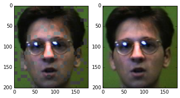
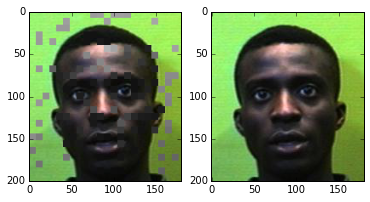
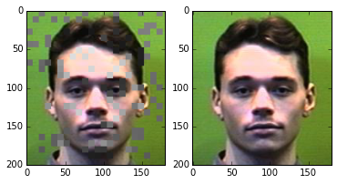

<img style="margin-left:35%;width:30%;" src="Anaconda_Logo_0702.png"></img> # Image Analysis with PySpark / Scikit-learn ## A use case for Anaconda Cluster <img style="margin-left:60%;margin-top:150px;width:30%;" src="anaconda_cluster_picture.png"></img> --- </img> # Build an image analysis example using * ## PySpark * ## Scikit-learn and scikit-image # Show how these tools work together # Test deployment with Anaconda cluster --- </img> # Image analysis example problem * Try to match images with similar images seen before * The end goal is to line up alike images, like this:  <br><br>  <br><br>  --- </img> # Why PySpark / Scikit / Anaconda cluster for this project * Scikit has useful machine learning and image processing tools for data sets in memory * PySpark can map / reduce theoretically unlimited data sets * Anaconda cluster easily configures clusters for PySpark, removing a common stumbling block for learning PySpark --- </img> # Helpful links with this image analysis example * Github repo: [https://github.com/ContinuumIO/image-analyzer/](https://github.com/ContinuumIO/image-analyzer/) * Nbviewer ipython notebook: [http://nbviewer.ipython.org/github/continuumio/image-analyzer/blob/master/Explore_Spark_Results.ipynb](http://nbviewer.ipython.org/github/continuumio/image-analyzer/blob/master/Explore_Spark_Results.ipynb) --- </img> # Steps of this image analysis example * Put each image on the hadoop distributed file system ```bash hadoop fs -put some_image_file.jpg /imgs/some_image_file.jpg ``` * Run measurements on each image (PySpark parallel use of scikit) * Do clustering among images to find groups with similar colors or hashes (PySpark) * Join the hashes and clusters of groups of images (PySpark) --- </img> # Measurements on each image * K-means clustering: K-means is an unsupervised classification method to find centroid colors in the images. * Scikit-learn is used, as seen in this [color quantization example](http://scikit-learn.org/stable/auto_examples/cluster/plot_color_quantization.html) --- </img> # Measurements on each image * Ward clustering: unsupervised hierarchical classification finding clusters of pixels in images similar in color and contiguous in space. * Seen in the clustering [Lena image example](http://scikit-learn.org/stable/auto_examples/cluster/plot_lena_ward_segmentation.html) --- </img> # Measurements on each image * Perceptive hashes: 1’s indicate a pixel’s grayscale value is darker than the mean value, 0's elsewhere as describe on this [related hacker factor blog](http://www.hackerfactor.com/blog/?/archives/432-Looks-Like-It.html) * Histogramming: Saving some of the percentiles of each color. --- </img> # Measurements on each image * The measurement data are saved in dictionaries in a spark RDD * Can subsequently map any of the measurements * Can inspect the data via ipython notebook queries of RDD * Each record in RDD is a (filename, measurements dictionary) tuple, like this: ```python (u'hdfs://ip-10-123-209-104:9000/imgs/femalevstrosvstros.17.jpg', {'cen': [...centroids array...], 'pca_var': [...principal component variance array...], 'meta': {...image metadata...}, 'phash': [...perceptive hashes of chunks...], 'histo': [...histogram of colors...], 'ward': [...ward cluster geometry hashes...], 'pca_fac': [...principal component factors...]}) ``` --- * Measurements on each image are embarassingly parallel and can be tested locally before running in PySpark ```python from map_each_image import on_each_image_selection from StringIO import StringIO from PIL import Image import numpy as np image = open('presentation/2b.png').read() image_object = np.array(Image.open(StringIO(image)), dtype=np.uint8) config = { 'ward_x_down': 64, 'x_down': 256, 'quantiles':(50,), 'n_clusters': 5, 'ward_clusters': 5, 'kmeans_sample': 2000, 'phash_bits': 256, } image_dict = on_each_image_selection(config, image_object=image_object, # from PIL as np.array metadata={'id': 'example_1'}) print image_dict.keys() \# prints: ['phash', 'histo', 'cen', 'ward', 'pca_fac', 'pca_var', 'id'] ``` --- </img> # After mapping the images through scikit image/learn tools * Run a larger K-means on the results from each image (group similar images in a larger K-means algorithm) * Uses each image's centriods and histograms as input vectors in the larger K-means. * Find the most common Ward clusters and perceptive hashes in each K-means cluster of images #### [K-means with hash counting in PySpark](https://github.com/ContinuumIO/image-analyzer/blob/master/image_mapper.py) --- </img> # When comparing images against the database * Join based on Ward cluster similarity, * Join based on perceptive hashes, or * Join based on K-means cluster * Create RDD's for joining and lookups, like this mapping of ward cluster hash to file name: ```python (-5013803343762532022, 'hdfs://ip-10-123-209-104:9000/imgs/femalegotoneelduns.jpg') ``` #### See [search.py](https://github.com/ContinuumIO/image-analyzer/blob/master/search.py) --- </img> # Joining new and old images based on a hash * PySpark joins are like this: ```python candidate_hashes.fullOuterJoin(old_hashes) ``` * And that joins new and old image tuples like this: ```python old_image=(-5013803343762532022, 'hdfs://ip-10-123-209-104:9000/imgs/femalegotoneelduns.jpg') new_image=(-5013803343762532022, 'hdfs://ip-10-123-209-104:9000/fuzzy/femalegotoneelduns.jpg') ``` --- </img> # After the joins we have an RDD of tuples like this for images that share a hash ```python (-5013803343762532022, ('hdfs://ip-10-123-209-104:9000/imgs/femalegotoneelduns.jpg', 'hdfs://ip-10-123-209-104:9000/fuzzy/femalegotoneelduns.jpg') ) ``` * Next we need to vote count those tuples --- </img> # A vote count to find the best agreement * Group by hash then count the values at each key ```python grouped = candidate_hashes.fullOuterJoin(old_hashes).groupByKey() def count_keys(x): counts = {} for u in x[1]: if u in counts: counts[u] += 1 else: counts[u] = 1 best = sorted(counts.items(), key=lambda x:-x[1])[0] return (x[0], (best, counts)) vote_counts = grouped.reduce(count_keys) ``` --- </img> # Ending up with a vote counts dictionary for each candidate image ```python (u'hdfs://ip-10-123-209-104:9000/fuzzy/male93384629338462.10.jpg', ((u'hdfs://ip-10-123-209-104:9000/imgs/male93384629338462.10.jpg', 40670), {u'hdfs://ip-10-123-209-104:9000/imgs/femalegotoneelduns.jpg': 19040, u'hdfs://ip-10-123-209-104:9000/imgs/femalevstrosvstros.17.jpg': 7840, u'hdfs://ip-10-123-209-104:9000/imgs/male93384629338462.10.jpg': 40670, u'hdfs://ip-10-123-209-104:9000/imgs/male93384899338489.19.jpg': 25760, u'hdfs://ip-10-123-209-104:9000/imgs/maleajflemajflem.5.jpg': 33600, u'hdfs://ip-10-123-209-104:9000/imgs/maledcbowedcbowe.20.jpg': 8400, u'hdfs://ip-10-123-209-104:9000/imgs/malegdhatcgdhatc.20.jpg': 7840, u'hdfs://ip-10-123-209-104:9000/imgs/maleggregoggrego.1.jpg': 3360, u'hdfs://ip-10-123-209-104:9000/imgs/malejabinsjabins.5.jpg': 11200, u'hdfs://ip-10-123-209-104:9000/imgs/malesaduahsaduah.11.jpg': 9520, u'hdfs://ip-10-123-209-104:9000/imgs/malestaffmoorsmoors.13.jpg': 9520, u'hdfs://ip-10-123-209-104:9000/imgs/malestaffmoorsmoors.14.jpg': 17920, u'hdfs://ip-10-123-209-104:9000/imgs/malestaffobeidnobeidn.14.jpg': 33040, u'hdfs://ip-10-123-209-104:9000/imgs/malesvkrizsvkriz.17.jpg': 10640})) ``` --- </img> # Dev-ops details * Used [Anaconda cluster](http://docs.continuum.io/anaconda-cluster/overview.html) to deploy PySpark cluster with scikit and numpy * [http://docs.continuum.io/anaconda-cluster/overview](http://docs.continuum.io/anaconda-cluster/overview) --- </img> # Anaconda cluster steps * Set up a [providers.yaml](http://docs.continuum.io/anaconda-cluster/overview.html#provider-setup) file like this <code> <pre> aws_east: cloud_provider: ec2 secret_id: XXXXXXXXXXXXX secret_key: XXXXXXXXXXXXX keyname: KEY-NAME-ON-AWS private_key: FULL-PATH-LOCAL-KEYFILE location: us-east-1 </pre> </code> * http://docs.continuum.io/anaconda-cluster/overview#provider-setup --- </img> # Anaconda cluster steps * Set up a [cluster profile](http://docs.continuum.io/anaconda-cluster/overview.html#profile-setup), like this YAML file for a spark cluster <pre> <code> spark_profile: provider: aws_east num_nodes: 2 node_id: ami-a29943cb node_type: m3.xlarge user: ubuntu plugins: - spark-yarn - notebook </code> </pre> * [http://docs.continuum.io/anaconda-cluster/overview.html#profile-setup](http://docs.continuum.io/anaconda-cluster/overview.html#profile-setup) --- </img> # Anaconda cluster steps * Start cluster <pre> <code class="bash"> acluster create spark-cluster --profile spark_profile </code> --- </img> # Working with Anaconda cluster * Push a file to all the nodes of cluster <pre><code class="bash"> acluster put some_file.py /tmp/some_file.py --target --all </code></pre> * Push a local directory to the head node but not others <pre><code class="bash"> acluster put ./tmp_data/ /tmp/data --target 0 </code></pre> --- </img> # Working with Anaconda cluster * Get files from specific workers <pre><code class="bash"> acluster get /tmp/some_file.txt some_file_0.txt --target 0 acluster get /tmp/some_file.txt some_file_1.txt --target 1 </code></pre> --- </img> # Working with Anaconda cluster * Conda install python dependencies and list what is installed <pre><code class="bash"> acluster conda install scipy scikit-learn pandas acluster conda list </code></pre> --- </img> # Working with Anaconda cluster * Submit a job for running by Spark master <pre><code class="bash"> acluster submit --stream image_mapper.py </code></pre> --- </img> # Working with Anaconda cluster * Run a remote command on some or all nodes: <pre><code class="bash"> acluster cmd "ls /tmp" --target --all </code></pre> --- </img> # Working with Anaconda cluster * Get a list of the clusters running <pre><code class="bash"> acluster list </code></pre> <pre><code> spark-cluster: nodes: \- 54.237.113.188 (head) \- 54.237.86.244 </code></pre> --- </img> # Working with Anaconda cluster * Get the metadata for a specific cluster <pre><code class="bash"> cat ~/.acluster/clusters.d/spark-cluster.yaml </code></pre> <pre><code class="bash"> spark-cluster: created_at: '2015-07-23 08:54:05' ids: \- i-393cbed0 \- i-3a3cbed3 machines: compute: \- 54.237.86.244 head: \- 54.237.113.188 private_key: ~/.ssh/psteinberg2.pem profile: spark_profile provider: aws_east user: ubuntu </code></pre> --- </img> # Working with Anaconda cluster * Shutdown the cluster <pre><code class="bash"> acluster destroy spark-cluster </code></pre> <pre><code class="bash"> Are you sure you want to destroy cluster "spark-cluster"? [y/N]: y INFO: Cluster "spark-cluster" destroyed Cluster destroyed </code></pre> --- </img> # Anaconda cluster supports a number of plugins, not just PySpark * Miniconda * Ganglia\* * HDFS * HIVE\* * Impala\* * IPython/Jupyter Notebook * IPython Parallel\* * Salt * Spark Standalone or Yarn * YARN * ZooKeeper \* alpha support --- </img> # Running image-analyzer example after cluster set up * Adjust settings for each step of analysis in [YAML config file](https://github.com/ContinuumIO/image-analyzer/blob/master/config.yaml) * Use the [run_helper.sh](https://github.com/ContinuumIO/image-analyzer/blob/master/run_helper.sh) in order to: * Install numpy and scikit on the cluster, * Download example images dataset, * Map each image through measurements, * Do K-means and hash counting on images together, and/or * Search for matches in a pool of new images <pre> <code> . run_helper.sh </code> </pre> --- </img> # While image-analyzer runs, monitor it in the browser with: * Ipython notebook: 1.2.3.4:8888 * WebHDFS file browser: 1.2.3.4:50070 * YARN spark cluster monitor: 1.2.3.4:9026 #### (replace 1.2.3.4 with your head node's IP) --- </img> # Inspecting results after model run * Use [the ipython notebook](http://nbviewer.ipython.org/github/continuumio/image-analyzer/blob/master/Explore_Spark_Results.ipynb#matches) to explore the results --- </img> # Questions? ## Peter Steinberg <b style="font-size:18px;">psteinberg@continuum.io</b>